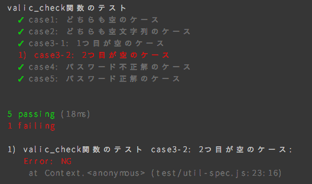
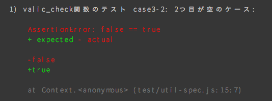

今回使うサンプルアプリ
よくあるログインフォームです。こんなやつ→

Click： スライドスタート
Enter： 次へ進む
→, ↓： 次へ進む
←, ↑： 前へ戻る
ESC： 一覧へ戻る
2017/06/29 @レプラホーン本社
var my_info = {
name : 'Kiyohito Kuwahara' ,
twitter : '@kuwahara_ngv4'（たまに変わります） ,
github : 'k-kuwahara' ,
qiita : '@clown0082' ,
skill : 'PHP, CodeIgniter, JS, Riot, Angular' ,
workplace : 'Leprachaun Corp.'
}
※ 何かあれば随時聞いていただいて問題ありません。
index.html
<p class="form "> ID:</p >
<input type="text " id="user ">
<p class="form "> Password: </p >
<input type="password " id="pass ">
<div class="btn-send ">
<button id="send " type="button ">Send</button >
</div >
index.html
<!-- ↓↓テスト対象のファイル -->
<script src="src/util.js"></script>
<script src="src/app.js"></script>
<!-- ↓↓テストケースのファイル -->
<script src="src/util-spec.js"></script>
app.js
$('#send' ).on('click' , () => {
var user = $('#user' ).val(),
pass = $('#pass' ).val(),
// ↓↓テスト対象のメソッド
key = auth_check(user, pass)
$('#result' ).text(get_message (key))
}
util.js
// 今回の説明のため正解を変数に保持
const correct = 'test1234'
function auth_check (user, pass) {
var key = ''
if (user == void 0 || pass == void 0)
key = 'required'
（続く）
util.js
else if (user.length == 0 || pass.length == 0)
key = 'required'
else if (pass != correct)
key = 'unauthenticated'
else if (pass.length > 0 && pass === correct)
key = 'login'
return key
}
デモアプリを開き、F12から「console」を表示して下さい。
次に、test/util-spec.jsファイルも開いてください。
※今回はindex.htmlにてutil-spec.jsファイルを読み込んでいるので、デモアプリを開いたタイミングでテストが実行されます。
auth_check関数のテスト
IDの文字数が0以上かつ、Passwordが'test1234'だったら正解
==========
case1: どちらも空のケース
OK
case2: どちらも空文字列のケース
OK （以下略）
console関数で地道にガリガリ書いてもいいですが、見辛いかつ、いちいちconsole開かないといけなく、色々不便です。
これを解決するため、フレームワークを導入しましょう。
今回はMochaを使います。
導入手順は以下です。
1. CDN等でmocha.js, mocha.cssを取得
今回は手っ取り早くCDNでソースを取得します。以下のタグをindex.htmlのheadタグの最後に追記して下さい。
<link rel="stylesheet" href="https://cdnjs.cloudflare.com/ajax/libs/mocha/3.3.0/mocha.min.css"> <script src="https://cdnjs.cloudflare.com/ajax/libs/mocha/3.3.0/mocha.min.js"></script>2. <div id="mocha"></div>を設置
デモアプリのindex.htmlに以下を追記しましょう。
Result: <span id="result"></span>
+ <div id="mocha"></div> </div>
3. テストケースの読み込み前にmocha.setup('bdd')を実行
デモアプリのindex.htmlに以下を追記しましょう。
+ <script> mocha.setup('bdd') </script>
<script src="src/util.js"></script>
<script src="src/util-spec.js"></script>
4. onload時にmocha.run()を実行
デモアプリのapp.jsに以下を追記しましょう。
$('#result').text(get_message(key))
})
+ // mochaの実行 + mocha.run()
5. テストケース(test/util-spec.js)を書き直す
デモアプリのutil-spec.js次のように変更しましょう。
describe('auth_check関数のテスト' , () => {
it('case1: どちらも空のケース' , () => {
if (auth_check() === 'required' ) {
console .count('OK' )
} else {
throw new Error ('NG' )
}
})
（以下、同様）
インストールしていない方は、以下のコマンドからインストールして下さい。
// yarnをグローバルインストール
$ npm i -g yarn
まだ以下の様な問題があります。
=> Node.jsで実行すれば解決！
導入手順は以下です。
1. yarn initでpackage.jsonを作成
$ yarn init -y
package.jsonが作られたら次にいきましょう。
2. npmからmochaをインストール
$ yarn add -D mocha
mochaのインストールが完了したら次にいきましょう。
3. テストケース、テスト対象コードの修正
テスト対象のsrc/util.jsを以下のように修正します。（ES2015！）
const correct = 'test1234'
module.exports = {
auth_check : (user, pass) => {
（続く）
3. テストケース、テスト対象コードの修正
else if (pass.length > 0 && pass === correct)
key = 'login'
...
},
get_message : (key) => {
（以下略）
3. テストケース、テスト対象コードの修正
次にtest/util-spec.jsを以下のように修正します。
+ const util = require('../src/util')
...
- if (auth_check() === 'required') {
+ if (util.auth_check() === 'required') {
- console.count('OK')
4. package.jsonにtestコマンドを設定
package.jsonを以下に以下を追記します。
"scripts": {
+ "test": "mocha"
}
それでは実行してみましょう！
$ yarn test
結果はこんな感じ→

if-elseやthrowでガリガリ書くのも正直面倒ですよね。
これを解決してくれるのがassertです。 この子は、Node.jsに標準で実装されているモジュールです。
test/util-spec.jsを以下のように修正します。
+ const assert = require('assert')
- if (util.auth_check() === 'required') {
- } else {
- throw new Error('NG')
- }
+ assert(util.auth_check() === 'required')
（以下同様）
それでは実行してみましょう！
$ yarn test
結果のエラーは
この問題の解決に良く使われるものとして、以下の3つがあります。
今回はwebpackを使います！
※ rollup.jsも良いツールですが、自分は死にました。。。
webpackを簡単にご紹介。
詳しくは公式サイト を御覧ください！
導入手順は以下です。
1. npmからwebpackをインストール
$ yarn add -D webpack
インストールが完了したら次へ→
2. webpack.config.jsを作成し設定
次に、バンドルの設定をしていきます。webpack.config.jsファイルを設定し、次を追記してください。→
const path = require('path' )
module.exports = {
entry : './src/app.js' ,
output : {
path : path.join(__dirname, 'build' ),
filename : 'bundle.js'
}
}
3. package.jsonにコマンドを設定
次はpackage.jsonのscriptsに実行用のコマンドを設定します。
"scripts" : {
+ "build": "webpack",
"test": "mocha"
}
4. src/app.jsの修正
src/app.jsを以下のように修正します。（修正箇所のみ記載）
+ import util from './util' // 1行目に追加
- key = auth_check(user, pass)
+ key = util.auth_check(user, pass)
- $('#result').text(get_message(key))
+ $('#result').text(util.get_message(key))
ついでにmochaの結果画面表示の記述を削除しましょう。
index.htmlについて
- <div id="mocha"></div>
- <script> mocha.setup('bdd') </script>
app.jsについて
- // mochaの実行
- mocha.run()
5. バンドルを実行
では実行してみましょう！
$ yarn build
build/bundle.jsが出力されていれば成功です♪
出力されたbundle.jsをindex.htmlに読み込ませてみましょう。
- <script src="src/app.js"></script>
- <script src="src/util.js"></script>
- <script src="test/util-spec.js"></script>
+ <script src="build/bundle.js"></script>
修正しましたら、ブラウザで確認してみましょう！
これまでNode.js上でテストしてきましたが、ブラウザによっては動かない可能性があります。
ブラウザを起動してテストを実行してくれるのが、karmaです。 この子用のプラグインを使って、各ブラウザで動くのかテストしてみましょう！
導入手順は以下です。
1. npmからkarma, karma-cliをインストール
$ yarn add -D karma karma-cli
その他のモジュールをインストール
$ yarn add -D karma-chrome-launcher karma-safari-launcher
karma-firefox-launcher karma-mocha karma-webpack
karma-mocha-reporter karma-coverage （←これらは好みで）
2. karma-cliを起動しkarma.conf.jsを作成
の前に、package.jsonにkarmaコマンドを設定しましょう。
"scripts": {
+ "karma": "karma", "build": "webpack",
"test": "mocha"
}
2. karma-cliを起動しkarma.conf.jsを作成
ではkarma-cliを起動しましょう。
$ yarn karma init
以下、対話的に設定内容を決めていくことになります。
Which testing framework do you want to use ?
Press tab to list possible options.
Enter to move to the next question.
> jasmine
ここで利用するテストフレームワークを選択します。
今回はmochaを選んで下さい。
Do you want to use Require.js ?
Press tab to list possible options.
Enter to move to the next question.
> no
今回はRequire.jsを利用しないので、noを選んで下さい。
Do you want to capture any browsers automatically ?
Press tab to list possible options.
Enter empty string to move to the next question.
> Chrome
> Firefox
> Safari
テストしたいブラウザを選んで下さい。
What is the location of your source and test files ?
Press tab to list possible options.
Enter to move to the next question.
> test/*spec.js
読み込むテストコードのパスを指定してください。
※ ワイルドカードも使えます。
Should any of the files included by the previous patterns
be excluded ?
You can use glob patterns, eg. "js/*.js" or
"test/**/*Spec.js". Enter to move to the next question.
>
先程指定したコードで除外したいものがありましたら、パスを指定してください。今回はなしです。
Do you want Karma to watch all the files and run the tests
on change ?
Press tab to list possible options.
> yes
簡単に言うと、watchモードにするか、否かです。今回はyesを選択してください。
3. karma.conf.jsの設定を変更
このままkarmaを起動するとUncaught ReferenceError: require is not definedと言われます。 これは、ブラウザではrequire()が使えないからです。したがって、「5. webpackを導入」と同様に、ブラウザで動くように webpackを通してやる必要があります。
3. karma.conf.jsの設定を変更
karma.conf.jsに以下のように追記します。
preprocessors: {
+ 'test/*spec.js': ['webpack'] },
4. package.jsonの設定を変更
karmaを起動するために、package.jsonを以下のように修正します。
"scripts": {
...
- "test": "mocha" + "test": "karma start" }
5. テストを実行
では、実行してみましょう！
$ yarn test
それぞれのブラウザが勝手に起動してテスト結果がコマンドラインに表示されたかと思います♪
です！乞うご期待！